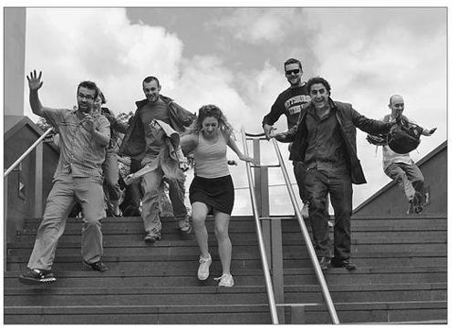

HAPPINESS HACK # 1 : UNLOCKING THE KINDNESS OF STRANGERS
幸福黑客 # 1: 释放陌生人的善意
The two most frequently recommended happiness activities across the scientific literature are to express gratitude and practice acts of kindness. Recent research has shown that we don’t even have to know someone to experience the benefits of thanking and being nice to them. Even fleeting acts of gratitude and kindness toward strangers can have a profound impact on our happiness. And positive gestures from strangers can make a big difference in how rich and satisfying our everyday lives feel.
Sociologists call the positive relationships we have with strangers “transitory public sociality.” We experience it in all kinds of public places: sidewalks, parks, trains, restaurants, stadiums, and coffee shops, for example. These transitory social interactions, when they happen, are usually brief and anonymous: we catch another’s eye, we smile, we make room for someone else, we pick up something someone has dropped, we go on our way. But these brief encounters, taken cumulatively, have an aggregate impact on our mood over time.
Researchers have shown that sharing the same space for even just a few minutes a day with kind and friendly strangers makes us more optimistic, improves our self-esteem, makes us feel safer and more connected to our environment, and generally helps us enjoy our lives more.12
12 And if we return the favor, we benefit as well: when we give to others, or act cooperatively, the reward centers of the brain light up.13
13
But strangers aren’t always inclined to be friendly to each other—and some researchers believe our shared spaces are becoming less friendly over time.
Dacher Keltner has devised a simple way to test this theory: a mathematical method for measuring the social well-being of any shared environment. It’s called the “jen ratio,” from the ancient Chinese word for human kindness. It compares the total positive interactions between strangers to the total negative interactions, in a given period of time and in a given place.14
14 The higher the ratio, the better the social well-being of the space and the happier you’re likely to feel after spending time in it. The lower the ratio, the poorer the social well-being, and the unhappier you’ll be if you spend too much time there.
To measure the jen ratio of a space, you simply watch it very closely for a fixed period of time—say, one hour. You count up all the positive and negative microinteractions between strangers, keeping track of two different totals: how many times people smile or act kindly toward each other, and how many times people act unfriendly, rude, or openly uninterested. All the positive microinteractions—such as big smiles, a hearty thank-you, a door being held open, a concerned question—get tallied on the left side of the ratio. All the negative microinteractions—a sarcastic comment, an eye roll, an unexcused bump, someone cursing under their breath—get tallied on the right side.
The jen ratio is a simple but powerful way to predict whether being in a particular place will make us happier or unhappier. When Keltner surveyed several years’ worth of recent research on social well-being and social spaces, he concluded, “Signs of a loss of jen in the United States are incontrovertible . . . with a jen ratio trending toward zero.”15
15岁
So how can we raise the jen ratio of everyday shared spaces? The solution is obvious, if hard to enact: we need to convince large numbers of people to do things like smile more, be more welcoming, express more gratitude, or pay more compliments. Positive psychologists, of course, have already given us this recommendation—but, as Lyubomirsky’s research shows, such recommendations rarely inspire direct individual action. Who wouldn’t feel daunted by the challenge of trying to increase the jen ratio of a big public space singlehandedly ? More likely, it would take a crowd, and not a single person, to effectively bump up the jen ratio. But there simply aren’t any well-established social traditions for going out and expressing gratitude or being kind to strangers together.
As a game designer, it is clear to me that we can tackle these problems by making this behavior more challenging and social. All it needs are a few arbitrary limitations, some multiplayer obstacles, and a feedback system in order to turn unlocking the kindness of strangers into a game.
So what exactly would a kindness game look like? And who would play it? These are questions I asked myself a few years ago, and, together with my good friend and fellow game developer Persuasive Games cofounder Ian Bogost, I decided to invent a game with the core mechanism of performing acts of kindness on strangers—as sneakily and stealthily as possible.
It would work just like the popular college campus game Assassins, in which players are assigned targets via e-mail, and then proceed to stalk each other across campus for days or even weeks to eliminate their targets with water guns and other toy weapons. But in our version, the game would be shorter (an hour or two) and confined to a much smaller space (a few city blocks, a park, or a large public plaza). And players wouldn’t kill each other with toy weapons—they’d kill each other with kindness. Most importantly, they wouldn’t be given specific targets, so anyone nearby was fair game for a thank-you or a compliment. And instead of being eliminated from the game when “killed,” players would join forces and cooperate with each other to keep performing bigger and more spectacular acts of kindness.
We called it Cruel 2 B Kind, or C2BK for short, after the famous line from Shakespeare’s tragedy Hamlet. We debuted it in 2006 in San Francisco and New York City; it’s since been played everywhere from Detroit, Michigan, and Johannesburg, South Africa, to Stockholm, Sweden, and Sydney, Australia. Here’s how it works: Cruel 2 B Kind is a game of benevolent assassination. At the beginning of the game, you are assigned three secret weapons via e-mail or text message. To onlookers, these weapons will appear like random acts of kindness. But to other players, the friendly gestures are deadly maneuvers that will bring them to their knees.
Some players will be killed by a compliment. Others will be slain by a smile. You and your partner might be taken down by a happy offer to help.
You can attempt to kill anyone else who is playing the game. However, you will have no idea who else is playing the game. You will be given no information a bout your targets. No names, no photos—nothing but the guarantee that they will remain within the game boundaries during the designated playing time. Anyone you encounter could be your target. The only way to find out is to attack them with your secret weapon.
Watch out: the hunter is also the hunted. Other players have been assigned the same secret weapons, and they’re coming to get you. Anything out of the ordinary you do to assassinate your targets may reveal your own secret identity to the other players who want you dead. So be cool when you attack. You don’t want to alarm innocent bystanders . . . or give away your secret identity.
In many cases, you and another player will spot and attempt to kill each other at the same time! For this reason, the weapons are assigned powers according to the classic rock-paper-scissors model: a hearty welcome beats a thank-you, for example, or a killer compliment beats a wink and a smile. And if both players deploy the same weapon at the same time? It’s a standoff—you turn and run in the opposite direction, and both players must wait thirty seconds before attacking again. As targets are successfully assassinated, the dead players join forces with their killers to continue stalking the surviving players. The teams grow bigger and bigger until two final mobs of benevolent assassins descend upon each other for a spectacular, climactic kill.
Will innocents be caught in the cross fire? Oh, yes. But when your secret weapon is a random act of kindness, it’s only cruel to be kind to other players ...

A team of C2BK players in London.
(Alex Simmons for the Hide & Seek Festival, 2008)
In addition to this basic rule set, we created a database of possible weapons, and invited players to suggest their own. For example:• Welcome your targets to beautiful [your neighborhood or city].
• Tell your targets, “You look gorgeous today!”
• Point out something amazing to your targets, such as, “Isn’t that an amazing bird!”
• Praise your targets’ shoes.
• Offer to help your targets with something specific.
• Thank your targets for something they’re doing right now.
• Express “mind-boggling” admiration of your targets.
• Wink and smile at your targets.
• Volunteer to answer any questions your targets have about something specific nearby.
Besides swapping kind gestures for toy weapons, the two most important design decisions that we made were to shrink the window of play and to obscure the number and identity of players. In a regular game of Assassins, the game is too spread out physically and time-wise to have a significant impact on the local environment. By reducing the field and length of play, we “concentrated” the game to increase its impact and intensity. And in a traditional game of Assassins, players know exactly who they’re targeting. Bystanders do occasionally get caught up in the cross fire, but it’s always an accident, and it’s usually not fun for the victim. (No one wants to be unexpectedly splattered by a water gun if they’re not participating in a game!) In C2BK, however, we wanted bystanders to get hit—every positive microinteraction would increase the jen ratio, regardless of whether it improved the player’s score. In fact, the higher percentage of “misfires” (i.e. toward nonplayers), the better.
To be fair, being accidentally “attacked” by a player is somewhat startling—but also potentially enjoyable. In a best-case scenario, the “victims” of play feel genuinely welcome or complimented or appreciated. At the start of the game, when players are timid and groups are small, this tends to be the case. Later, as the players get bolder and teams get larger, strangers are more likely to be clued in to the unusual nature of the activity and provoked to wonder why everyone is making such showy efforts of gratitude and kindness. This is one of the intended effects of the game—to reveal if friendly gestures are considered out of place, and to provoke people to wonder why exactly that is. Of course, by the end of a game, being complimented by a horde of twenty or more adrenaline-pumping players is clearly no everyday act of transitory public sociality. No one is likely to mistake that for an ordinary act of kindness. But the spectacle works toward a different positive end: it adds a spark of novelty and curiosity to the environment. It’s bracing, but benevolent—and our goal in including this level of spectacle was to jolt people out of their social bubbles.
Years of low jen ratios may make some bystanders more cynical and jaded than others—and for them, getting welcomed, serenaded, thanked, or complimented by a single stranger or a crowd of strangers might not initially be a positive experience. That’s why we were careful to playtest the various “weapons,” to whittle the list down to the most consistently positive-reaction-provoking gestures. I’ve also observed—and filmed—many C2BK games in action, specifically looking for signs that the majority of bystanders benefit, in addition to the players. To date, my studies have shown that the visible positive reactions—smiles, wide-eyed curiosity and amazement, cheerful replies—far outnumber the blank stares or negative reactions.
Ultimately, though, it’s the players who benefit most from the game. That’s because when you play C2BK, the basic happiness activities of expressing gratitude and practicing random acts of kindness are made more engaging.
First of all, the C2BK game makes the kindness activities more interesting. There are two obstacles in the way of your performing them: you don’t know who to attack, and you’re trying to sneak past and avoid other players. Much of the game is spent scouring the environment for targets while trying to keep a low profile. You can’t help but wonder about everyone you see: Are they playing the game, too? Strangers become potential targets and allies, and the only way to find out if they share your secret is to interact positively with them.
C2BK also produces adrenaline. Paying a compliment becomes an act of courage: you have to work up your nerve to overcome the social norms of ignoring strangers, and you have to do it as quickly as possible, because every second that passes is a second that another player could be targeting you. C2BK also has more pronounced fiero moments. Players and teams let out big hollers and cheers when they’ve made a successful kill, and the fiero moment is intensified by the number of misfires you’ve made on the way. My rough estimate from observing several games is that C2BK participants attack on average five times as many nonplayers as players.
The game also has more novelty than ordinary acts of kindness. It encourages you to think about being nice to strangers in different environments— and the possibilities are endless. It’s most frequently played in downtown settings, but Cruel 2 B Kind isn’t just a game for sidewalks and parks—any public or shared space could benefit from having its jen ratio raised. I’ve received reports of C2BK games played in settings as diverse as high-rise office buildings, arts festivals, libraries, shopping malls, convention centers, apartment complexes, college dorms, public train systems, and even the beach.
Finally, C2BK gives you collaborators in your happiness activity. You can gather up your friends to be on a team with you, and as you start getting folded into larger and larger groups—the biggest C2BK game I’ve participated in had more than two hundred players in a three-by-three city-block radius—you build up a sense of being on a collective mission to kill with kindness. It’s the kind of emotionally charged experience that can forever change how you see your own kindness capabilities. Even if you play C2BK formally only once or twice, you may find yourself continuing to think of friendly gestures as secret weapons you can deploy anytime, anywhere. (This is exactly what players report to me weeks and months after their first time playing the game.) The game gives you a different view into two happiness activities, charging them with more excitement, fiero, and social energy.
CRUEL 2 B KIND, like many happiness hacks, isn’t a product. There’s no software to download, no license to buy, no fee to pay. It’s meant to be a solution to a problem—the problem of how to increase the jen ratio of a shared space—and it can be adopted and adapted by anyone, anywhere. It was cheap to invent—Ian Bogost and I worked for free, and the whole project probably cost us less than five hundred dollars in expenses to playtest and launch.
The game can be played using any kind of mobile communications technology: text messaging, mobile e-mail, and Twitter are the most popular platforms for C2BK.
To help spread the hack, the Cruel 2 B Kind website includes a few essential tools. There’s a six-minute video showing the highlights of a game from start to finish, to help potential players get up to speed quickly. There’s also a one-page “cheat sheet” with rules and frequently asked questions that players can print out and bring to the game.
It’s hard to keep track of all the C2BK games that happen—game organizers don’t have to get our permission to run a game, so I rely on voluntary reports. Three years after launching the game, I still hear from new game organizers roughly every month. At the very least, C2BK has been played in more than fifty different cities, in ten countries, on four continents.
Recently, I received news of perhaps the most interesting C2BK setting yet: Summer Darkness, one of the biggest gothic festivals in Europe. The three game organizers wrote me an e-mail from the festival’s home city, Utrecht, in the Netherlands, explaining, “Ultimate goal: get the Goths (coming from all over Europe), and ‘civilians’ (non-Goths) to play together in the streets.”
Now, if any group would find straightforward happiness activities hokey, I’m pretty sure it would be goths. The gothic subculture, of course, is known for embracing dark, mysterious, and morbid imagery. There’s a kind of loneliness and alienation deeply entrenched in gothic stories, music, and style. And Summer Darkness is officially billed as a “dark underground lifestyle” festival, so it might be the last place you’d expect to see people throwing themselves into extroverted interaction with strangers, let alone cheerful expressions of gratitude and random acts of kindness.
For Cruel 2 B Kind to be an appealing activity to this community stands as excellent proof, I think, that even the most unabashedly do-good activity can be transformed into mischievous fun. It’s proof that happiness hacking works. You really can turn positive-psychology advice about what’s “good for you” into something that you really want to do.